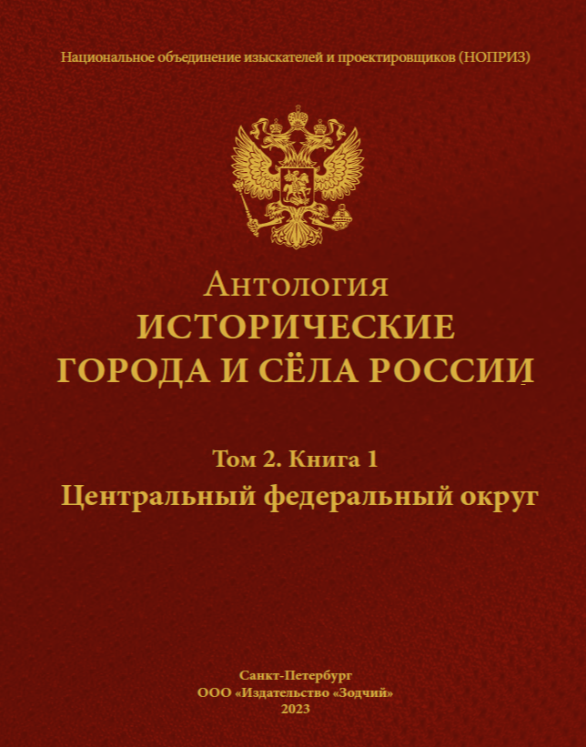

Антология
Исторические города
и сёла России
Градостроительная история России
в научном собрании из 10 томов
Культурное наследие нашей страны.
История поселений, основанных до 1914 года: архитектура, культурная память и развитие территорий.
10 томов, 13 книг
об исторических
городах и сёлах
История архитектуры
и градостроительства
России
Исследование
исторических
территорий
Знания для сохранения
культурного
наследия
Все книги проекта
10 томов — целостная картина
исторической России
Антология объединяет исторические города и сёла России.
Книжное собрание раскрывает историю расселения, архитектуры
и градостроительства через судьбы поселений.
Выберите книгу, чтобы узнать о её содержании

Выбранная книга
- Исторические исследования
- Архитектура поселений
- Градостроительная история
- Культурное наследие территорий
Получить электронную версию
Книга целиком в формате PDF придёт вложением в письме на указанный адрес.
Выбранная книга
целиком в PDF
целиком в PDF
Вложением
в письме
в письме
Для дальнейшего
исследования
исследования